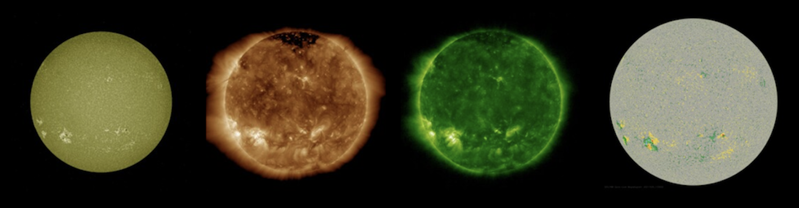

My Data
Sun Images
SDO (Solar Dynamics Observatory) provides day-by-day images of our Sun through multiple wavelengths. Each wavelength views the mechanics of the Sun at its different layers (e.g. chromosphere, photosphere, corona). By analyzing the Sun through different wavelengths, we can look for features that indicate the formation of a solar flare and/or coronal mass ejection to predict it early.
Distant Star Application
Both solar flares and CMEs are known to emit massive amounts of radiation out from the Sun. The Earth’s magnetic field is capable of resisting this, which is one of the reasons we’re still alive. However, this may not be true for other planets. Higher intensity ejections lead to greater radiation output, so quantifying the intensity of ejections on other stars helps us understand the amount of radiation a potentially habitable planet may experience.